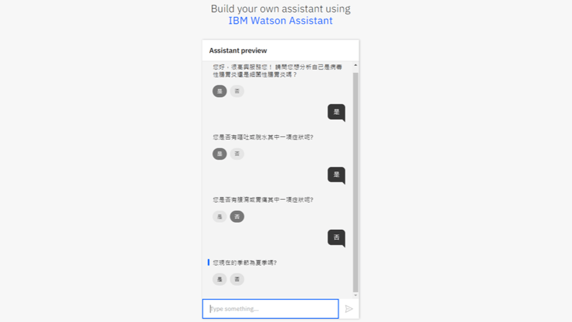
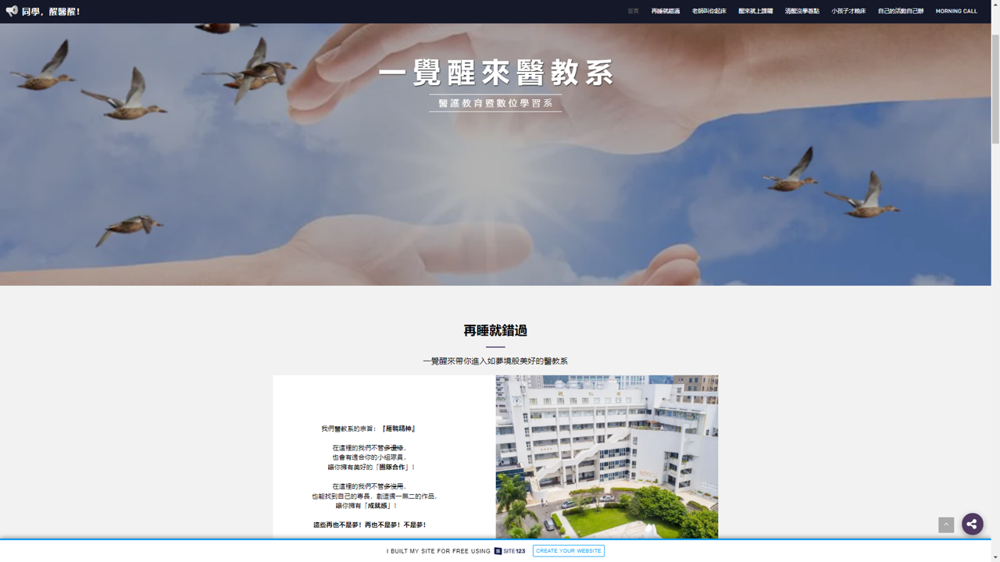
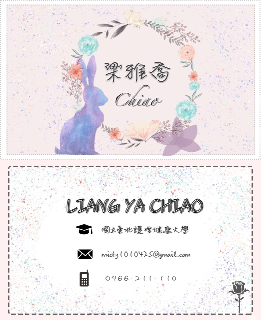

梁雅喬
Ya-Chiao,Liang
國北護-醫二二A.
關於我
你好，我是雅喬，目前就讀國北護醫教系，個性開朗樂觀，喜歡嘗試各種新事物，是一個不太容易生氣的人，喜歡冷靜思考每一件事，我認為人最好的溝通方式就是微笑，所以我時常將它掛在臉上，這樣也較容易和人親近。 18歲開始打工，自己賺取生活費及學費，在牙科打工的過程中，學會細心負責、專心傾聽、有耐心，接著五專校外實習在屈臣氏學習，在店長及同事的教導下，學會在遇到突發狀況時能處理問題、表達能力、臨場反應、以及人際溝通的能力，這些對我來說是非常珍貴的經驗，讓我對未來進入社會做好準備。
學歷
國立台北護理健康大學-醫護教育暨數位學習
2020/09-2022/06
就學中
就學中
耕莘健康管理專科學校-化妝品應用與管理
2015/09-2020/06
已畢業
已畢業
證照
美容技術士 |
丙級 |
|
|---|---|---|
女子美髮技術士 |
丙級 |
|
化學技術士 |
丙級 |
|
BAP商務專業應用能力國際認證 |
PPT |
工作經歷
屈臣氏永和店 顧客服務員 2020/02-2021/09
結帳收銀、為顧客介紹適合的產品、解決顧客的疑問，學會人際溝通、解決問題、表達能力、臨場反應
華泰牙科 牙醫助理 2018/09-2020/01
櫃台、協助醫生看診、灌齒模，學會細心負責、專心傾聽、有耐心
專長
- 專業工具
- Photoshop
- Active Presenter
- Premiere
- powtoon
- scratch
- vyond
- 文書工具
- Word
- PowerPoint
- Excel
- Google Drive
作品集
| POWTOON-入境防疫 使用powtoon製作"入境防疫"主題之影片 |
|
|---|---|
| VR虛擬實境-彩虹眷村 使用VR相機拍攝虛擬實境，內容為有關彩虹眷村故事及路徑之教材 |
|
|  | 聊天機器人-腸胃炎 使用IBM Watson Assistant製作出讓民眾分辨自己是否得到"腸胃炎"， 以及了解腸胃炎相關內容。 作品連結 |
|  | site123-網頁製作 使用site123為醫教系製作招生網站 作品連結 |
|  | 多媒體導論課程-名片製作 使用photoshop繪製自己的名片正反面，以自己的生肖、 喜歡的花、喜歡的色彩及幾何圖形為設計理念 |
| bookwidget-教學影片1 製作bookwidget-Flash Cards的教學影片，2~5分鐘即可學習1個單元， 搭配字幕、旁白，讓觀賞者更清楚了解影片的重點。 |
|
| bookwidget-教學影片2 製作bookwidget-QUIZ的教學影片，2~5分鐘即可學習1個單元， 搭配字幕、旁白，讓觀賞者更清楚了解影片的重點。 |
|
| scratch 製作簡易小遊戲 |